转录组太卷，发文难？多组学也许是个新赛道：染色质可及性、免疫组库、蛋白组学、代谢组学
原文：https://mp.weixin.qq.com/s?__biz=MzAwMzIzOTk5OQ==&mid=2247540613&idx=1&sn=19c8c98bb46c8e3751a244ba57733c87&chksm=9b3c26d5ac4bafc393d695fe70c7734ffbca81976675a68e3205020875d9c36870fd120020fc#rd 合集：生信基地

别怕学不会，只怕你不学

 单细胞系列全新课程：2026.08~09，为期一个月在生信基地（线上/线下均可参与），“手把手”的带大家完成单细胞多组学的学习。
单细胞系列全新课程：2026.08~09，为期一个月在生信基地（线上/线下均可参与），“手把手”的带大家完成单细胞多组学的学习。 教单细胞，我们是专业的！Biomamba的单细胞教程播放量已经50.0w+。小伙伴们的发文致谢可见：致谢合辑。
教单细胞，我们是专业的！Biomamba的单细胞教程播放量已经50.0w+。小伙伴们的发文致谢可见：致谢合辑。
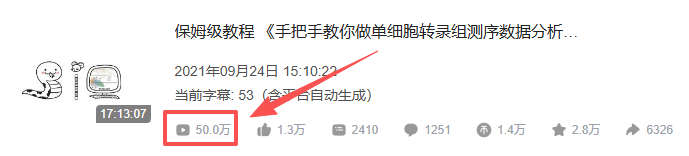
https://www.bilibili.com/video/BV1S44y1b76Z/
交流中我们发现，由于缺少编程、单细胞、文章套路等基本知识，大家自学并不能完全自学掌握单细胞分析技能。因此，我们推出了全新的《单细胞多组学》。2026.08~09，为期一个月在生信基地（线上/线下均可参与，错过直播也可以加入录播/答疑+循环开课）“手把手”的带大家完成单细胞多组学的学习。拒绝生信快餐！课后欢迎大家随时在群里对课程内容提问~。参与此次课程你将获得：1、为期一个月单细胞多组学的陪伴式教学。2、加入《单细胞多组学》群聊，三年内课程指导、答疑、回放、直播复听，相信足够覆盖你的硕博生涯学习。3、开箱即用的单细胞分析镜像，256GB内存、500GB硬盘、20线程服务器3个月使用权。4、单细胞多组学的骨灰级分析手册、代码、测试文件（~360GB、120982个文件）。 通过一个月的学习，你能够解锁上百种单细胞多组学的可视化方案，以下为部分图片集锦：
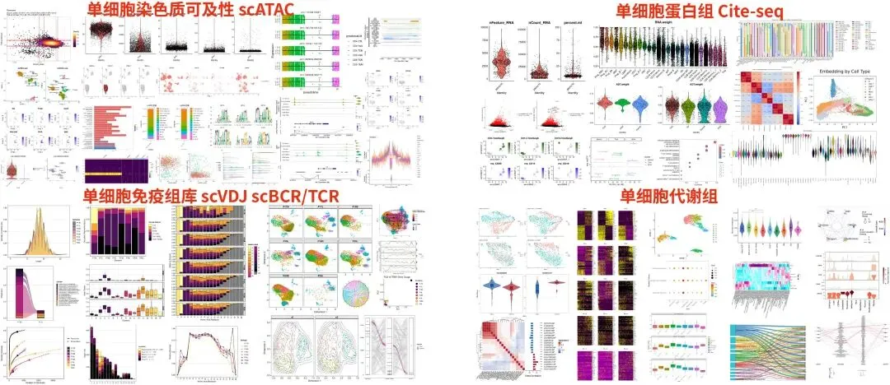
报名请联系客服微信[ Biomamba_zhushou]：


课程资料一览
通过这次全程学习，你将获得并掌握以下学习手册与资料：首先是生信人必备的三个编程课程以及配套资料：生信小白入门课(4h视频回放)12w播放量，生信小白必看的Linux教程R语言入门课回放来啦~8小时掌握生信Python 以及以下实战专题：
scATAC-单细胞染色质可及性
同我们以前的课程一样，我们给大家准备了学习手册和学习资料，大家可联系客服微信[Biomamba_zhushou]领取：
教程图片集锦：
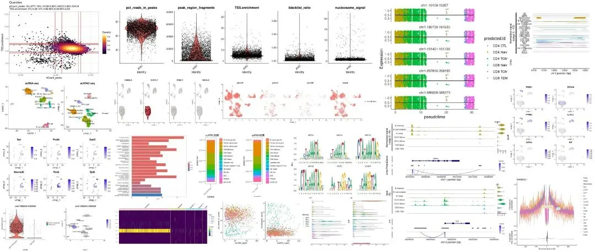
**
**
单细胞染色质可及性学习手册
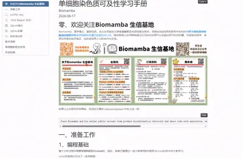
**
**
**
**
单细胞染色质可及性教程目录 ：
一、准备工作
二、scATAC-seq
1. 染色质可及性
2. scATAC-seq文库构建
3. scATAC-seq的多组学联合
4. scATAC-seq分析
三、Cell Ranger ATAC
1. 软件下载与安装
2. 获得测试数据
3. cellranger-atac定量
四、Signac绪论
1. PBMC演示数据
2. 评估scATAC中的降维方法
3. DNA 可及性和线粒体基因型的联合分析
4. scATAC分析的扩展
5. 讨论
五、Signac实操
1. signac基本流程
2. 与scRNA的联合分析
3. 常见可视化
4. 多样本分析
5. 基因型联合scATAC分析
6. motif分析
7. 共可及性网络构建
六、拟时序分析
1. 创建cell_data_set
2. 拟时序分析
七、版本信息
八、单细胞教程全收录
九、欢迎致谢
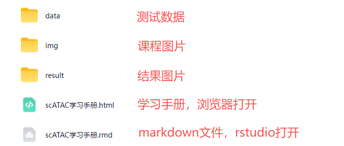
测试文件，总大小56.65GB
scVDJ-单细胞免疫组库
 同我们以前的课程一样，我们给大家准备了学习手册和学习资料，大家可联系客服微信[Biomamba_zhushou]领取：教程图片集锦：
同我们以前的课程一样，我们给大家准备了学习手册和学习资料，大家可联系客服微信[Biomamba_zhushou]领取：教程图片集锦：
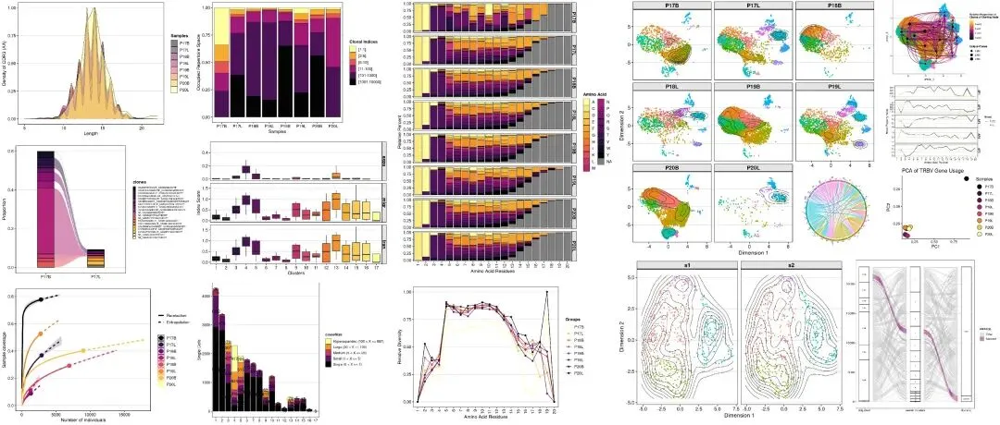
单细胞免疫组库学习手册
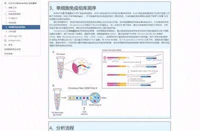
单细胞免疫组库教程目录：
一、准备工作
二、免疫组库测序
1. TCR和BCR
2. 结构组成
3. 单细胞免疫组库测序
4. 分析流程
三、cellranger VDJ
1. scBCR数据的上游定量
1.1 下载
1.2 参考基因组准备
1.3 测试数据下载
1.4 软件运行
2. scTCR数据的上游定量
2.1 TCR测试数据下载
2.2 准备配置文件
2.3 软件运行
四、scRepertoire
- 红斑性头痛/正常皮肤演示数据
2. 数据实操
2.1 基本克隆可视化
2.2 可视化克隆动力学
2.3 整体序列分布概要
2.4 比较样本克隆多样性、差异与相似性
2.5 合并克隆和单细胞对象
2.6 整合后数据可视化
2.7 量化克隆偏差
2.8 基于scBCR-seq数据的分析
五、参考
六、单细胞教程全收录
七、欢迎致谢
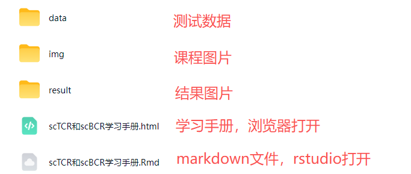
测试文件，总大小39.53GB

citeSeq-单细胞蛋白组
同我们以前的课程一样，我们给大家准备了学习手册和学习资料，大家可联系客服微信[Biomamba_zhushou]领取：教程图片集锦：
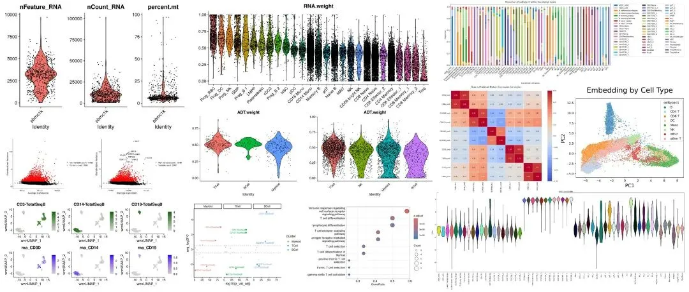
单细胞蛋白组学习手册
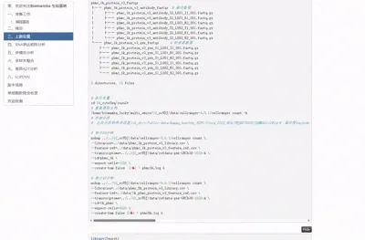
单细胞蛋白组教程目录：
一、准备工作
二、绪论
三、上游定量
四、RNA表达矩阵分析
1. 读入数据并创建Seurat分析对象
2. 质控数据及可视化
3. 细胞分群
4. 分群后的可视化
5. 寻找marker基因并对cluster进行重命名
五、多模态分析
1. ADT数据处理
2. 构建多模态邻居
3. 多模态结果可视化
4. 骨髓CITE-seq数据实战
六、多样本整合
1. 数据读取
2. RNA数据整合
3. ADT数据整合
4. 多样本多模态分析
七、差异ADT分析
1. 差异分析
2. 火山图
3. 富集分析
八、sciPENN
1. sciPENN绪论
2. 分析环境搭建
3. python库加载
4. 加载测试数据
5. 创建训练集和测试集
6. 训练sciPENN对象
7. 预测蛋白表达+细胞类型
8. RNA+ADT数据共降维
9. 整合多个CITE-seq数据集
九、版本信息
十、单细胞教程全收录
十一、欢迎致谢
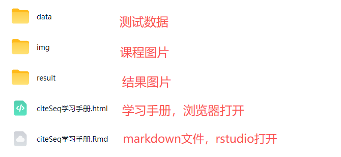
测试文件，总大小23.80GB
scMeta-单细胞代谢组
同我们以前的课程一样，我们给大家准备了学习手册和学习资料，大家可滴滴助手[Biomamba_zhushou]领取：
教程图片集锦：
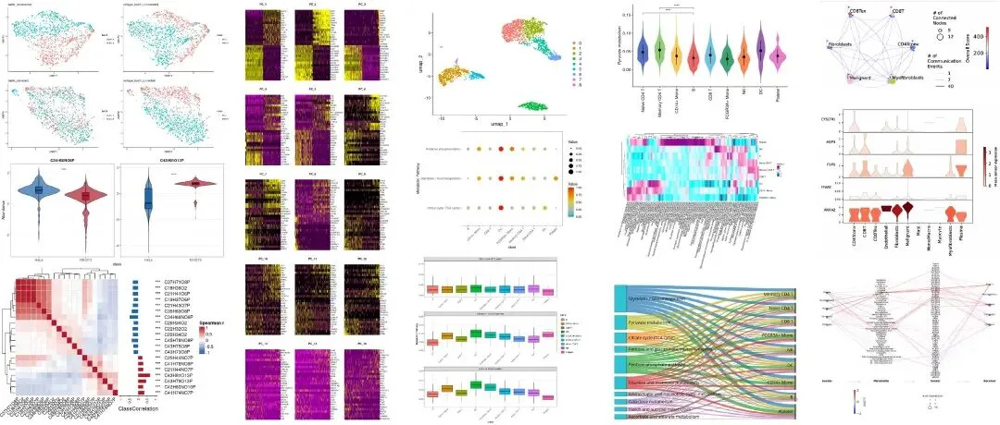
单细胞代谢组学习手册
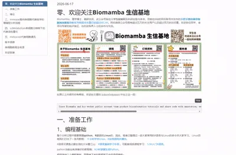
** **单细胞代谢组教程目录 ：一、准备工作二、绪论1. 摘要
2. 引言
3. 计算代谢组学的十大核心挑战（工具研发的核心导向）
4. 计算代谢组学资源的主要发展趋势
5. 工具性能、稳定性与应用现状评估
6. 计算代谢组学流程中的检测质量、验证与可重复性
7. 工具收集与整理方法
三、mmease面向单细胞代谢组学的增强型分析流程
1. 文献解读
2. 环境搭建
3. 代谢物数据格式
4. 数据读取
5. 数据插补
6. 数值转换
7. 数据标准化
8. 批次效应矫正
9. 差异分析
10. 模型分类
11. 小结
四、scMetabolism单细胞分辨率下的代谢活性量化
1. 文献解读
2. 环境搭建
3. 数据读取
4. 如何生成可用于scMetabolism的对象?
5. 基于Seurat计算单细胞代谢活性
6. 提取代谢评分矩阵
7. 代谢通路可视化
8. 代谢通路在不同亚群显著性比较
9. 多通路比较，帮助筛选关键通路
10. 代谢通路流量变化对比
11. 不依赖Seurat进行代谢分析（不推荐）
五、mebocost代谢细胞通讯
1. 绪论
2. 环境搭建
3. 单样本的代谢物细胞通讯预测
4. 多样本的代谢物细胞通讯预测
六、版本信息七、单细胞教程全收录八、欢迎致谢
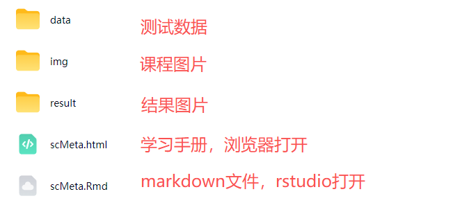
测试文件，总大小1.27GB
赠送课程：SeekGene多组学全家桶
同我们以前的课程一样，我们给大家准备了学习手册和学习资料，大家可滴滴助手[Biomamba_zhushou]领取：
回放已上线！12h掌握SeekGene单细胞/空间多组学分析，涵盖scFAST、scATAC、SeekSpace全流程实战
报名费用
一个月满满的课程只要￥3999，相信比小学生补课班还便宜。支持对公。也欢迎看看我们的价值观：想钱想疯了？
线下学习环境
地点 ：南京市江宁区，详细地址滴滴助手[Biomamba_zhushou]
往期活动现场：
除了知识之外，现场还能够给大家提供：
茶水吧、咖啡机、零食、小吃

欢迎交流

 留一个领取资料、开箱即用的单细胞分析镜像的助手[Biomamba_zhushou]，方便各位随时交流。同时我们也构建了交流群矩阵，欢迎大家一起讨论。
留一个领取资料、开箱即用的单细胞分析镜像的助手[Biomamba_zhushou]，方便各位随时交流。同时我们也构建了交流群矩阵，欢迎大家一起讨论。
 您点的每个赞和在看，我都认真当成了喜欢
您点的每个赞和在看，我都认真当成了喜欢